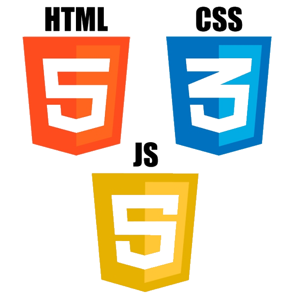

GITA 1
The first year of GITA taught us how to use C# to create Windows Applications. The workspace we used was Visual Studio Community Edition, a great entryway into the world of computer programming.

The first year of GITA taught us how to use C# to create Windows Applications. The workspace we used was Visual Studio Community Edition, a great entryway into the world of computer programming.
The second year of the program focuses on website structure, design, and functionality through HTML, CSS, and Javascript. With these languages, students create websites with applications such as those created in GITA 1, but with further structure and made from scratch.
Coming 2022
Coming 2023